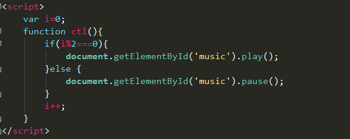
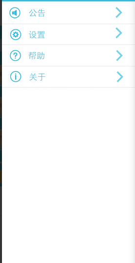
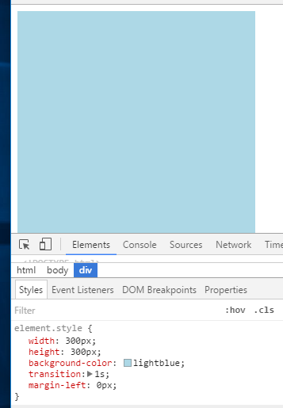
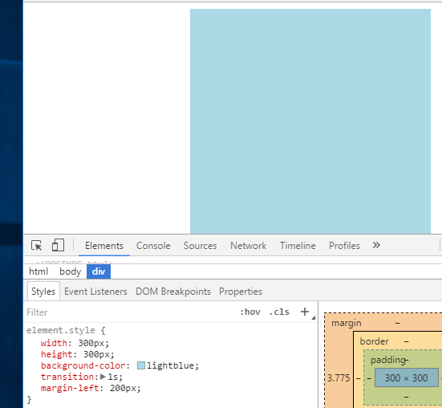
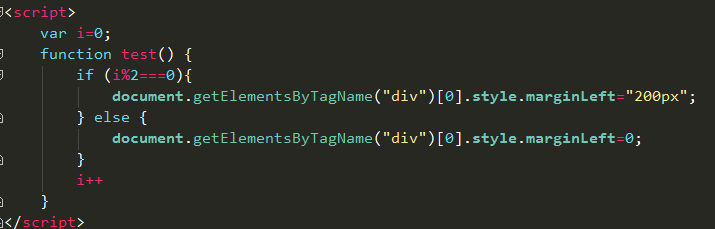

技术分享小课堂
Javascript在HTML的简单应用
什么是JavaScript?
JavaScript是一种脚本语言(轻量级弱类型编程语言)，语法简单，不用编译，不依赖于ide，调试方便（打开浏览器）
设计来为HTML页面添加交互行为，使用时直接嵌入HTML页面
JavaScript能做什么？
1.读写HTML元素
2.HTML表单等数据验证
3.对添加的事件做出相应
4.检测访问者浏览器等等
如何使用JavaScript？
html中以script标签引入，与CSS文件类似，javascript代码可以直接写在script标签中，也可以作为外部文件引入。
为提高页面加载速度，一般在body闭合标签前引入
1.CSS任务：游戏精灵背景音乐播放
audio是HTML5新标签，用以插入音频文件，常用属性：src、autoplay、loop、controls、preload；
音乐播放用户可控，自带控制器遮盖，不美观
代码实现：
所需audio对象方法：play()、pause()
2.CSS任务：游戏精灵菜单栏滑出
通过JS改变菜单栏的margin-left值
设置属性
 代码实现：
轮播图：
渐隐式：js控制轮播项目隐藏和显示
滚动式：js控制轮播项目隐藏和显示
setInterval() 方法可按照指定的周期(以毫秒计)来调用函数或计算表达式。
设置好变量i借助setInterval()达到滚动效果
javascript能做到的不止这些
网站的输入验证登录，注册字符限制，随机选择，游戏等等
js任务2就是用JS做出简化版的杀人游戏
感谢观看
BY : 李绍博